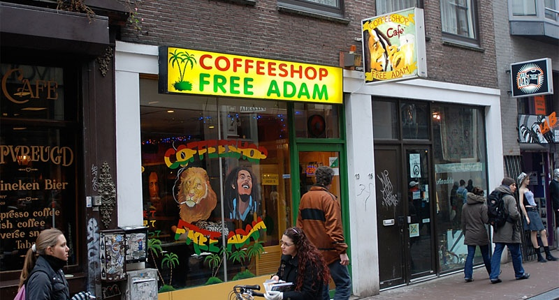

Many people know that in Amsterdam weed can be smoked without fear of the police. But it turns out that all drugs throughout the Netherlands ... are illegal. The fact is that in addition to the so-called “Opium Law”, which prohibits the manufacture, distribution, possession and use of all known drugs, there is also a by-law of the 1960s “Directives on the methods of investigation and suppression of punishable acts described in the Opium Law” ". These directives do not legalize any drugs, but indicate the boundary between “forbidden and punishable” and “forbidden, but not punishable.” Marijuana is on the list of “forbidden but not punishable”. Therefore, it is sold in coffee shops and smoked in special institutions.